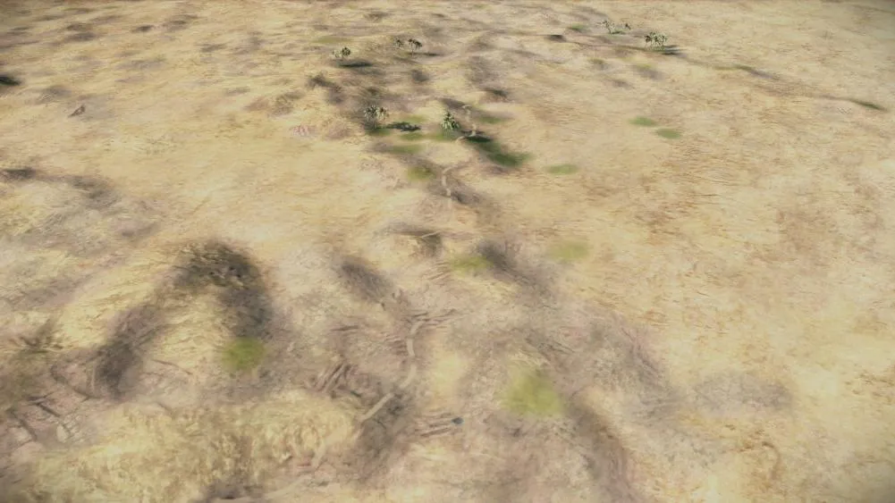
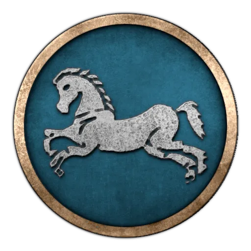
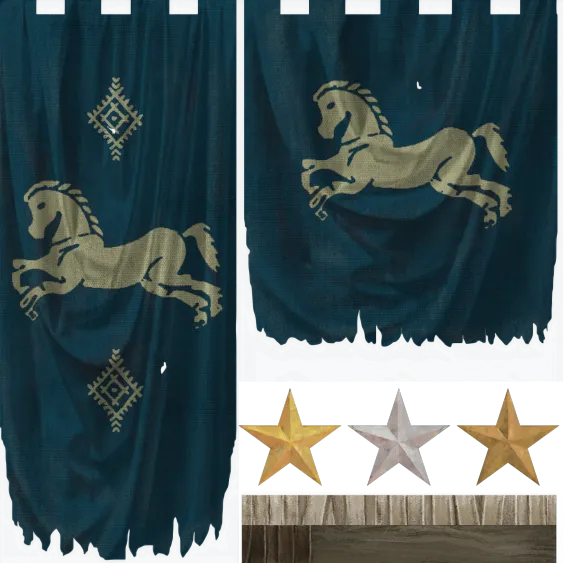
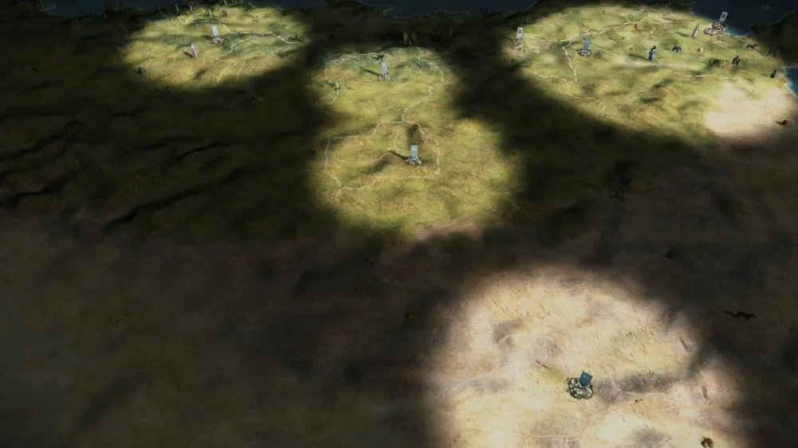
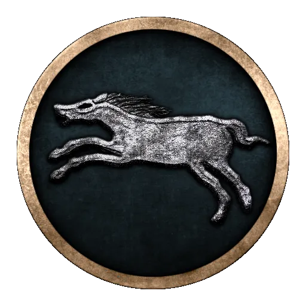
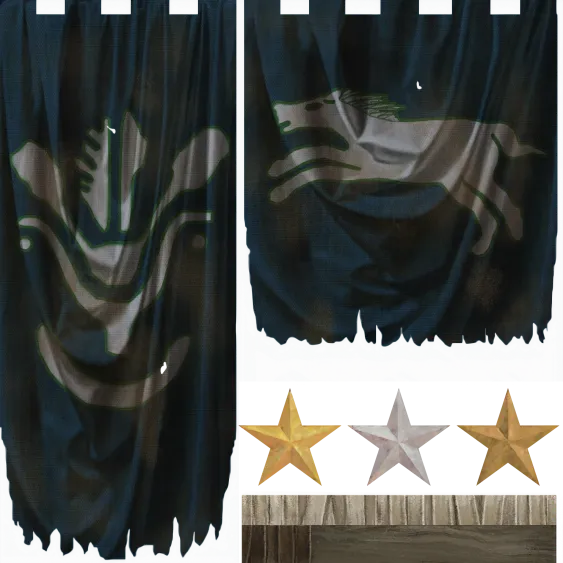
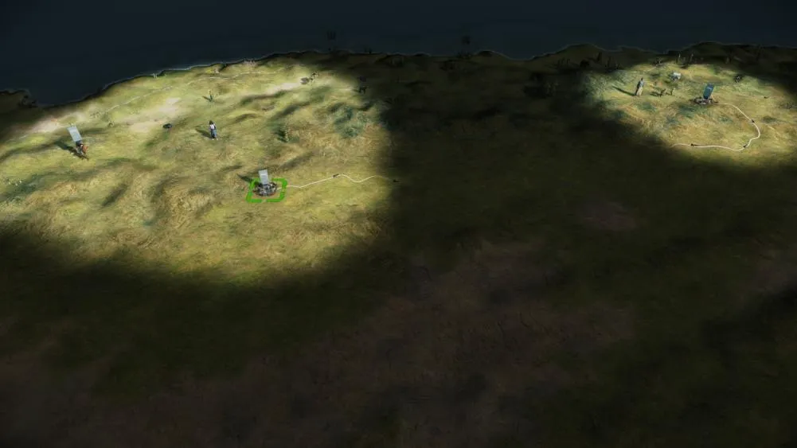

RTR: Imperium Surrectum
RTR: Imperium SurrectumThe Numidians: Massylii and Masaesylii
2022-09-17 · Maurits

Hello everyone!
The new RIS map will not just bring you highly detailed representations of Greece, the Balkans, and unprecedented amounts of historically accurate settlement locations. It also shows the Northern African desert in all its deadly splendour. Today, I'm pleased to introduce to you not one, but two Numidian factions! You have already met the Massylii in older versions of our mod. RIS 050 will add their closest kin and deadliest foe: the Masaesyli. Numidia is not just home to some of the ancient world's finest mounted skirmishers, but also the land of hard-to-remember and unpronounceable names. Fortunately, some of our team members came up with an adequate solution. In daily parlance, they refer to our dear Numidian factions as Oldmidia (Massylii) and Newmidia (Masaesyli). Therefore, there is no excuse not to try out both of their challenging starting positions!
Before anything else, there was the desert, home to only those most daring and hardy:


Massyli


The Massylii are the original Numidian faction from the base game. We had changed their name to the Massylii in anticipation of splitting the Numidians into their historical division of 270 BC, and now that the Masaesyli are in, the division is properly represented!
The Massylii are stronger, with 5 regions, closer to Carthage, and have the advantage compared to the Masaesyli, who are situated further west.
Historically, they were allied with Carthage against Rome in the 2nd Punic War (218 - 201 BC) under Masinissa. However, as the tide turned and Hannibal could not win the war in Italy, Masinissa changed sides and started supporting the Romans. In turn, Syphax also swapped from helping Rome to helping Carthage. At the Battle of the Great Plains (203 BC), Scipio Africanus and Masinissa combined to beat the forces of Carthage and Syphax. This ultimately led to the Roman victory in the war. Syphax was captured, and his lands given to Masinissa. From there, the Kingdom of Numidia was born. A descendent of Masinissa, Jugurtha, would later become a great enemy of Rome, not even 100 years after these events.
In 270 BC, you lead the tribal nation of the Massylii. You have good relations with Carthage, as do the Masaesyli, your blood rivals. Taking them out, as well as dealing with the Musulamii and Gaetuli to the south, will strengthen your position if you ultimately decide to follow in Masinissa's footsteps and to backstab Carthage!


Masaesyli


The Masaesyli were a coalition of Numidian tribes in what is now Algeria. Little is known about their early history, but they seem to have come to form a loose alliance in the course of the third century. In the last decades of the century, the Masaesyli confederation tightened its bonds and became a monarchy.
By the time of the 2nd Punic War, Syphax was the ruler of this people. When the Romans first reached out to him in an attempt to undermine the Carthaginian position in Africa, Syphax accepted the opportunity of an alliance as he hoped it would help him to defeat the rival Massylii under Masinissa. Yet, during the turbulous events of the war elsewhere, it came to a reversal of the coalitions and the Masaesyli soon fought on the Carthaginian side. After Scipio Africanus had landed in Africa, the Masaesyli were defeated several times, Syphax was captured and his kingdom annexed by the Massylii.
In RIS, you will have the chance to change the course of history. In 270 BC, the Masaesyli have just settled in Western Numidia and find themselves surrounded by (other) nomadic peoples. The relations to Carthage are amiable, but its power should not be underestimated. In the East, the Massylii aspire to establish their position as the leading kingdom in the interior and they stand in your way to glory. Will you prove to be a better king than Syphax?

I would like to share the all new campaign description for the Masaesyli, which will definitely get you in the mood for war among the endless sand dunes:
"Tiberius (Sempronius Longus) now recalled his cavalry, perceiving that they could not cope with the enemy, as the Numidians easily scattered and retreated, but afterwards wheeled round and attacked with great daring — these being their peculiar tactics. " – Polybios III.72.10
In the beginning was he who opposes, the great Änti, son of Poseidon and Gaia. Him we call our hero, albeit of times long past. Just like us, the Masaesyli, he was invincible as long as he didn’t lose touch with the hallowed sands we call our own! Far away, in a distant desert, your hooves might lead you to the sacred place called Msoura. Look at the imposing stones; behold the mightiest of all, whom our local elders claim to be the tomb of the great Änti! Taller than the grandest palm tree, protector of our land and people against invaders old and new. Collector of skulls – so much better suited than marble for a proper temple, the spoils of warriors to honour our venerable and brave ancestors!
Is it not sadly fitting that he who opposes, he who could not be beaten, was slain through the sly trickery of one of these Greeks, unwanted trespassers from faraway coasts? Herakles was his name, half-god – HAH! Half-wit rather! – who tricked our great Änti by lifting him from the sacred sands that gave him his strength. Is it not from the East that danger ever looms? Is it not from the realm of the rising sun that our people might expect their misery?
To the East we also find our brethren and dearest rivals, the Massyli. Some say they are even more proficient horsemen than us, but we know better of course. Who dares face our fierce javelinmen in battle? Don’t these Phoenician invaders empty their purses to the very bottom of gold and silver and whatever they can find, only to secure our allegiance? Is there an enemy that could cope with us, we Masaesyli who share every single breath with our dear horses from childhood, our closest friends, who would never desert us in an hour of need?
Times are changing. Our wise try and consult the ancestors, pondering the mysteries of Tifinagh, secrets not even you or me or any of our brave warriors can understand. All we need to know is the dull beat of the hoof on the sand. Sharpen your spears! Summon the courage of old, let us be the likes of Änti himself! For in the desert, only he can rule who wrestles and wins…

That's all we have prepared for this Dev Diary, but stay tuned - more is to come very shortly!
In the meantime, let us know in the a channel which of the Numidias you will play first! Will you opt for Masinissa, or Syphax? Do *you* have what it takes to become the ruler of the desert? :gldgmtk: